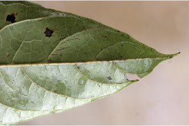
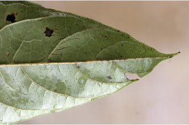

Trees up to 15 m tall.
15 ಮೀ ಎತ್ತರದವರೆಗಿನ ಮರಗಳು.
மரங்கள் 15 மீ. உயரம் வரை வளரக்கூடியது.
Bark brown, smooth, lenticellate; blaze reddish.
ತೊಗಟೆ ಕಂದು ಬಣ್ಣದಲ್ಲಿದ್ದು ನಯವಾಗಿರುತ್ತವೆ ಮತ್ತು ವಾಯುವಿನಿಮಯ ಬೆಂಡು ರಂಧ್ರಗಳ ಸಮೇತವಿರುತ್ತವೆ;ಕಚ್ಚು ಮಾಡಿದ ಜಾಗತ ಕೆಂಪು ಛಾಯೆಯಲ್ಲಿರುತ್ತದೆ.
மரத்தின் பட்டை ப்ரவுன், வழுவழுப்பானது, பட்டைத்துளைகள் (லெண்டிசெல்லேட்) உடையது; உள்பட்டை சிவப்பு நிறமானது.
Young branchlets terete, lenticellate, densely pubescent.
ಎಳೆಯ ಕಿರುಕೊಂಬೆಗಳು ದುಂಡಾದ ಆಕಾರ ಹೊಂದಿದ್ದು ವಾಯುವಿನಿಮಯ ಬೆಂಡು ರಂಧ್ರಗಳ ಸಮೇತವಿದ್ದು ದಟ್ಟವಾಗ ಮೃದು ತುಪ್ಪಳದಿಂದ ಕೂಡಿರುತ್ತವೆ.
சிறியநுனிக்கிளைகள் குறுக்குவெட்டுத் தோற்றத்தில் வளையமானது, பட்டைத்துளைகள் (லெண்டிசெல்லேட்) உடையது, அடர்த்தியாக உரோமங்களுடையது.
Leaves simple, alternate, spiral, sometimes appears to be crowded at apex; petiole 1.8-3.5 cm long, planoconvex in cross section, pubescent, swollen at base; lamina 7-21 x 2-8 cm, narrow elliptic - oblong to elliptic - lanceolate, apex acute to acuminate, base acute to cuneate, margin entire, sometimes distantly toothed; coriaceous, drying brown, tomentose on midrib and nerves above, pubescent beneath; midrib slightly canaliculate above; secondary nerves 7-18 pairs, slightly impressed above, often with hairy domatia at their axils beneath; tertiary_nerves coarsely reticulate or reticulo-percurrent.
ಎಲೆಗಳು ಸರಳವಾಗಿದ್ದು ಪರ್ಯಾಯ ಮತ್ತು ಸುತ್ತು ಜೋಡನಾ ವ್ಯವಸ್ಥೆಯಲ್ಲಿದ್ದು ಕೆಲವು ವೇಳೆ ಅಗ್ರದಲ್ಲಿ ದಟ್ಟವಾಗಿ ಗುಂಪಾಗಿರುವ ತರಹ ಕಾಣುತ್ತವೆ;ತೊಟ್ಟುಗಳು 1.8 – 3.5 ಸೆಂ.ಮೀ. ಉದ್ದವಿದ್ದು ಅಡ್ಡ ಸೀಳಿದಾಗ ಸಪಾಟ ಪೀನ ಮಧ್ಯದ ಆಕಾರ ಹೊಂದಿದ್ದು, ಮೃದು ತುಪ್ಪಳದಿಂದ ಕೂಡಿರುತ್ತವೆ, ಮತ್ತು ಉಬ್ಬಿದ ಬುಡದ ಸಮೇತವಿರುತ್ತವೆ;ಪತ್ರಗಳು 7 – 21 X 2-8 ಸೆಂ.ಮೀ. ಗಾತ್ರ, ಸಂಕುಚಿತ ಅಂಡವೃತ್ತ-ಚತುರಸ್ರದಿಂದ ಅಂಡವೃತ್ತ - ಭರ್ಜಿಯವರೆಗಿನ ಮಾದರಿಯ ಆಕಾರ, ಚೂಪಾದುದರಿಂದ ಕ್ರಮೇಣ ಚೂಪಾಗುವವರೆಗಿನ ರೀತಿಯ ತುದಿ ,ಚೂಪಾದುದರಿಂದ ಬೆಣೆಯಾಕಾರದವರೆಗಿನ ರೀತಿಯ ಬುಡ,ನಯವಾದ ಅಂಚು ಹೊಂದಿರುತ್ತವೆ,ಕೆಲವು ವೇಳೆ ಅಂಚು ಅಂತರವುಳ್ಳ ದಂತಿತ ಮಾದರಿಯಲ್ಲಿರುತ್ತದೆ;ಮೇಲ್ಮೈ ಕಾಗದವನ್ನೋಲುವ ರೀತಿಯಲ್ಲಿದ್ದು ಒಣಗಿದಾಗ ಪತ್ರಗಳು ಕಂದು ಬಣ್ಣ ಹೊಂದಿರುತ್ತವೆ,ಪತ್ರಗಳು ಮೇಲ್ಭಾಗದಲ್ಲಿ ಮಧ್ಯ ನಾಳ ಮತ್ತು ಇತರೆ ನಾಳಗಳು ದಟ್ಟ ಮೃದುತುಪ್ಪಳವನ್ನು ಹೊಂದಿದ್ದು ತಳ ಭಾಗದಲ್ಲಿ ಮೃದುತುಪ್ಪಳದಿಂದ ಕೂಡಿರುತ್ತವೆ;ಮಧ್ಯನಾಳ ಮೇಲ್ಭಾಗದಲ್ಲಿ ಸ್ವಲ್ಪ ಮಟ್ಟಿಗೆ ಕಾಲುವೆಗೆರೆ ಸಮೇತವಿರುತ್ತದೆ; ಎರಡನೇ ದರ್ಜೆಯ ನಾಳಗಳು 7 ರಿಂದ 18 ಜೋಡಿಗಳಿದ್ದು,ಮೇಲ್ಭಾಗದಲ್ಲಿ ಅಚ್ಚೊತ್ತಿದಂತಿರುತ್ತವೆ, ಹೆಚ್ಚಿನ ಸಂಧರ್ಭಗಳಲ್ಲಿ ತಳಭಾಗದ ಅಕ್ಷಾಕಂಕುಳಿನಲ್ಲಿ ರೋಮಸಹಿತವಾದ ಸಹಜೀವಿ ಗೂಡಿನ ಸಮೇತವಿರುತ್ತವೆ; ಮೂರನೇ ದರ್ಜೆಯ ನಾಳಗಳು ಒರಟಾದ ಜಾಲಬಂಧ ನಾಳ ವಿನ್ಯಾಸದಲ್ಲಿರುತ್ತವೆ ಅಥವಾ ಜಾಲಬಂಧ ನಾಳ ವಿನ್ಯಾಸದಲ್ಲಿದ್ದು ಓರೆಯಾಗಿ ಎಲೆದಿಂಡಿಗೆ ಕೂಡುತ್ತವೆ.
இலைகள் தனித்தவை, மாற்றுஅடுக்கமானவை, சுழல் போன்று அமைந்தவை, சிலசமயங்களில் சிறுகிளைகளின் நுனியில் இலைகள் கூட்டமாக மற்றும் நெருக்கமாக காணப்படும்; இலைக்காம்பு 1.8-3.5 செ.மீ. நீளமானது, குறுக்குவெட்டுத் தோற்றத்தில் பிளேனோகான்வக்ஸ், உரோமங்களுடையது, காம்பின் தளப்பகுதி உப்பியது; இலை அலகு 7-21 X 2-8 செ.மீ., குறுகிய நீள்வட்டம்-நீள்சதுர வடிவானது முதல் நீள்வட்டம்-ஈட்டி வடிவானது, அலகின் நுனி கூரியது முதல் அதிக்கூரியது, அலகின் தளம் கூரியது முதல் ஆப்பு வடிவானது, அலகின் விளிம்பு முழுமையானது, சிலசமயங்களில் ஆங்காங்கே பற்களுடையது; கோரியேசியஸ், உலரும் போது ப்ரவுன் நிறமானது, அலகின் மேற்பரப்பில் மையநரம்பு மற்றும் நரம்பு பகுதிகள் உரோமங்களுடையது, அலகின் கீழ்பரப்பு உரோமங்களுடையது; மையநரம்பு மேற்புறத்தில் அலகின் பரப்பைவிட சிறிது பள்ளமானது; இரண்டாம் நிலை நரம்புகள் 7-18 ஜோடிகள், அலகின் மேற்புறத்தில் சிறிது பள்ளமானது, உரோமங்களுடைய டொமேசியா நரம்புகளின் கோணங்களில் உடையது; மூன்றாம் நிலை நரம்புகள் அகன்ற வலைப்பின்னல் போன்றவை அல்லது வலைப்பின்னல்-பெர்க்கரண்ட் போன்றவை.
Inflorescence panicles, terminal, densely pubescent; flowers sessile; bracts present.
ಪುಷ್ಪಮಂಜರಿಗಳು ತುದಿಯಲ್ಲಿನ ಪುನರಾವೃತ್ತಿಯಾಗಿ ಕವಲೊಡೆಯುವ ಮಾದರಿಯವುಗಳಾಗಿದ್ದು,ದಟ್ಟ ಮೃದು ತುಪ್ಪಳದಿಂದ ಕೂಡಿರುತ್ತವೆ;ಹೂಗಳು ತೊಟ್ಟುರಹಿತವಾಗಿರುತ್ತವೆ;ಪತ್ರಕಗಳು ಇರುತ್ತವೆ
மஞ்சரி பேனிக்கிள் வகை மஞ்சரி, தண்டின் நுனியில் காணப்படும், அடர்த்தியாக உரோமங்களுடையது; மலர்கள் காம்பற்றது; பூவடிச்செதில் உடையது.
Drupe, globose; seed one, rugose.
ಡ್ರೂಪ್ಗಳು ಗೋಳಾಕಾರದಲ್ಲಿರುತ್ತವೆ;ಬೀಜಗಳ ಸಂಖ್ಯೆ 1 ಇದ್ದು ಸುಕ್ಕುಸುಕ್ಕಾದ ಮೇಲ್ಮೈ ಹೊಂದಿರುತ್ತವೆ.
உள்ளோட்டுத்தசைகனி (ட்ரூப்), கோள வடிவமானது; ஒர் விதையுடையது, சுருக்கங்களுடையவை (ருக்கோஸ்).
 
